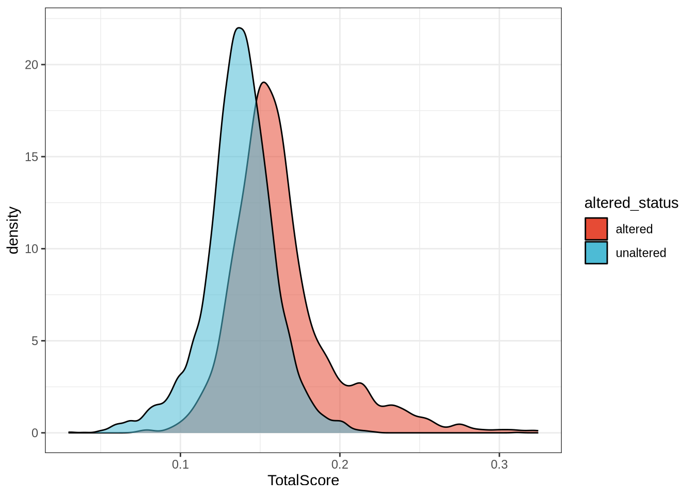
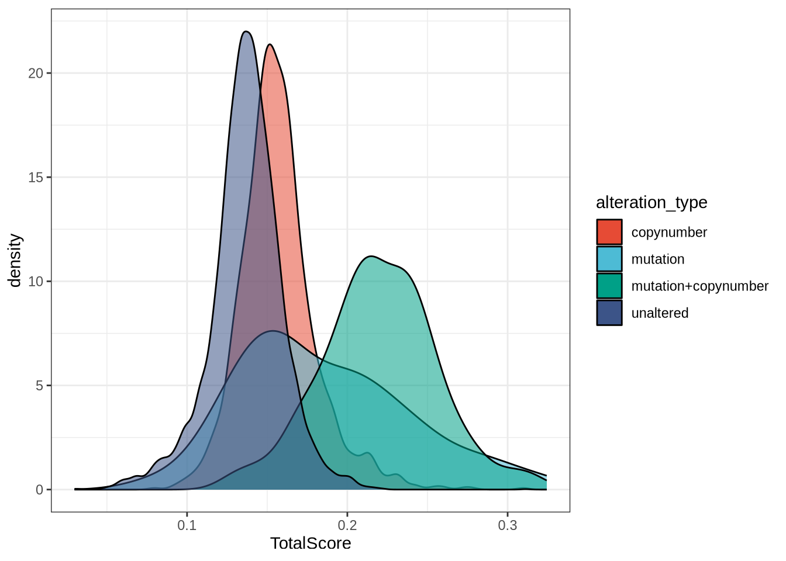
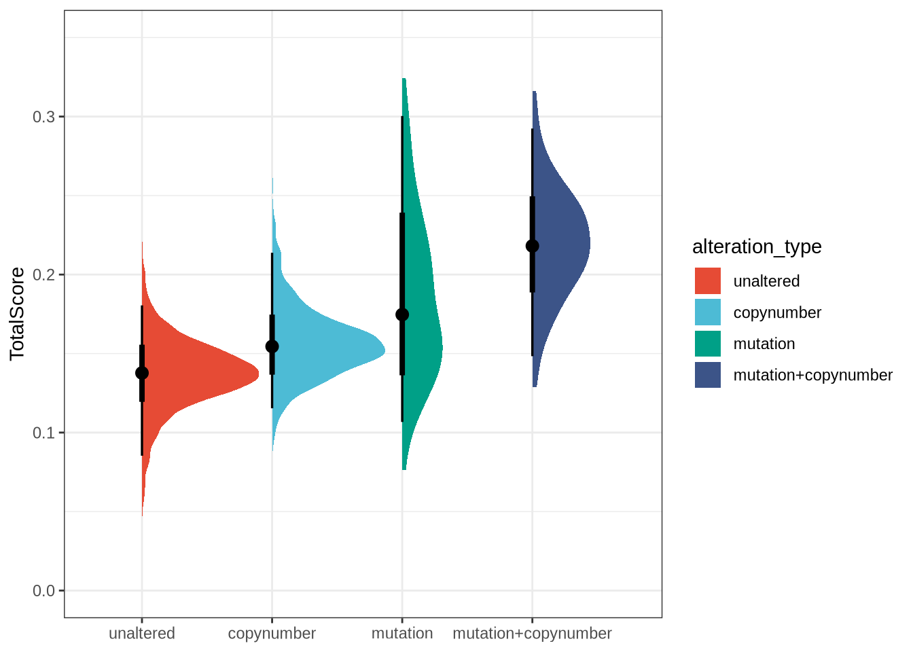
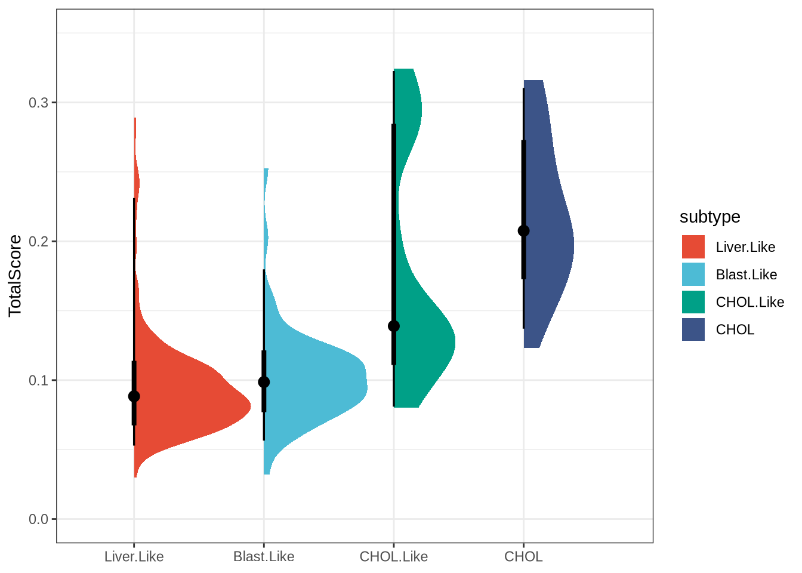
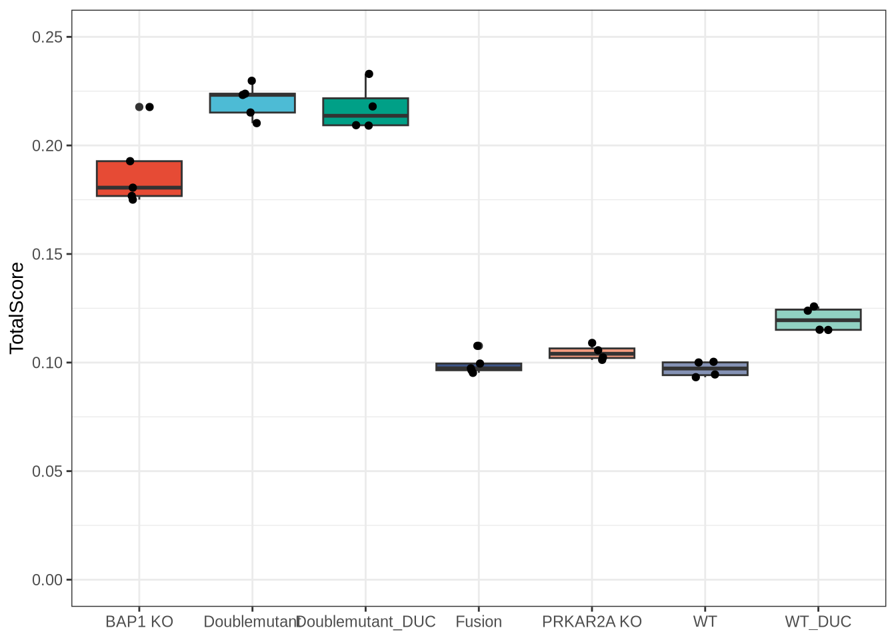
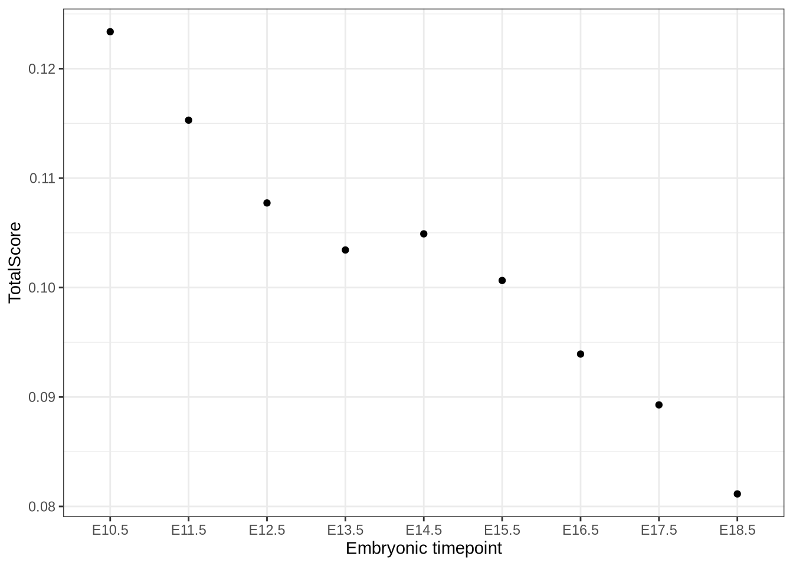

library(tidyverse)
library(data.table)
library(ggdist)
library(ggsci)
library(broom)
library(singscore)
library(annotables)Introduction
BAP1 is a tumor suppressor gene that encodes a multi-target deubiquitinase (whose targets include histone H2A), imparting it with wide-reaching impacts across the cell cycle, cell proliferation, DNA damage repair, apoptosis, and more. In the cancer context, germline mutations to BAP1 are associated with BAP1 tumor predisposition syndrome and somatic mutations frequently occur among some cancer types like uveal melanoma, kidney renal clear cell carcinoma, hepatocellular carcinoma, and malignment mesothelioma, impacting patient survival outcomes. For these reasons, BAP1 alteration (here defined as an inactivating mutation or copy number loss, although aberrant low expression may also qualify in a broader context) has emerged as an important risk and prognostic marker.
In Sturgill et al. 2024, we leveraged large-scale genomics data from The Cancer Genome Atlas (TCGA) to identify a relevant bulk RNA-seq expression-based transcriptomic profile associated with BAP1 loss in the cancer context. Briefly, we performed differential expression analysis between BAP1-altered and -unaltered tumors among cancer types where BAP1 alteration is most frequent and impactful: cholangiocarcinoma (TCGA-CHOL), kidney renal clear cell carcinoma (TCGA-KIRC), liver hepatocellular carcinoma (TCGA-LIHC), mesothelioma (TCGA-MESO) and uveal melanoma (TCGA-UVM).
Here, we use this set of differentially expressed genes to inform single-sample scoring using the rank-based singscore method, which computes standardized scores for a specified gene set in a manner conceptually similar to single-sample gene set enrichment analysis (GSEA). Then we explore how these scores relate to known BAP1 alteration labels in cancer, as well as BAP1 knockout in human liver organoids and embryonic liver development in mice (external datasets). This method can be generally applied to any dataset where one might suspect significant BAP1-related differences across groups of interest. The work shown here is a slightly modernized and minimal version of a slice of the original paper code with some streamlining and improvements. It is not, and is not intended to be, a 1:1 reproduction, but a revisitation. Note that the singscores have the reverse directionality from the original paper score implementation, in which higher scores indicated normal-like BAP1 activity; here, higher scores indicate BAP1 dysfunction instead.
Data
All of the original paper data is available as a zipped bundle on Zenodo. I have included the TCGA sample annotations, BAP1 signature gene set, small helper data files, and instructions for downloading larger data files separately:
data/sample_anno.txt - TCGA sample annotations
data/bap1_signature_genes.txt - BAP1 signature gene list
data/rsem_colnames.txt - Helper for importing TCGA bulk RNA-seq
data/chol_coldata.txt - TCGA-CHOL (cholangiocarcinoma) cohort IDs
data/lihc_coldata.txt - TCGA-LIHC (liver hepatocellular carcinoma) cohort IDs and subtypes
TcgaTargetGtex_rsem_gene_tpm - Main TCGA bulk RNA-seq file (~8.4GB uncompressed)
GSE215785_norm_counts_FPKM_GRCh38.p13_NCBI.tsv.gz - External organoid dataset
data/GSE215785_meta.txt - Formatted sample metadata for GSE215785
GSE90047_Bulk-cell_RNA-seq_Pooled_Normalized_TPM.txt.gz - External mouse dataset
Note: If you have any issues installing any package dependencies, you might also consider using Pixi to install and run R and all dependencies.
Results
Single-sample scoring of TCGA tumors
First, we’ll load the libraries, annotations, and gene data.
The TCGA sample annotation file includes the individual patient ID, tumor cohort (or cancer type), BAP1 altered status (unaltered or altered), and the alteration type (unaltered, mutation only, copy number loss only, or mutation + copy number loss).
# Import and set factor columns
sample_anno <- read_tsv("data/sample_anno.txt") |>
mutate(altered_status = factor(altered_status),
alteration_type = factor(alteration_type))
sample_anno |> head()| tcga_id | cohort | altered_status | alteration_type |
|---|---|---|---|
| TCGA-DK-A2I6-01 | TCGA-BLCA | unaltered | unaltered |
| TCGA-FD-A6TK-01 | TCGA-BLCA | unaltered | unaltered |
| TCGA-UY-A78L-01 | TCGA-BLCA | unaltered | unaltered |
| TCGA-4Z-AA84-01 | TCGA-BLCA | unaltered | unaltered |
| TCGA-XF-A9SK-01 | TCGA-BLCA | unaltered | unaltered |
| TCGA-YF-AA3M-01 | TCGA-BLCA | unaltered | unaltered |
The BAP1 signature genes were derived from a prior differential expression analysis with adjustments for tumor purity and subtype. They are given with a direction column, with “1” indicating a gene with higher expression in BAP1-mutant vs. non-mutant tumors and “-1” indicating lower relative expression.
signature_genes <- read_tsv("data/bap1_signature_genes.txt")
signature_genes |> head()| ensembl | symbol | direction |
|---|---|---|
| ENSG00000001629 | ANKIB1 | 1 |
| ENSG00000002822 | MAD1L1 | 1 |
| ENSG00000003402 | CFLAR | 1 |
| ENSG00000004478 | FKBP4 | 1 |
| ENSG00000004779 | NDUFAB1 | 1 |
| ENSG00000005007 | UPF1 | 1 |
We’ll also import a helper file with column names for the TCGA bulk RNA-seq to help filter out samples not represented in our annotated dataset.
# Retain only the TCGA column names that are represented in our sample annotations
rsem_colnames <- read_tsv("data/rsem_colnames.txt", col_names = FALSE) |>
filter(X1 %in% sample_anno$tcga_id) |>
pull(X1)Because of the very large amount of data (60,499 genes x 19,131 samples), we’ll want to use data.table::fread for fast and efficient operations and to immediately subset on the rsem_colnames while importing. These data are log2(TPM+0.001)-transformed.
# Import RNA-seq dataset using only samples of interest
expression_file <- file.path("data", "TcgaTargetGtex_rsem_gene_tpm")
dat <- fread("data/TcgaTargetGtex_rsem_gene_tpm",
select = c("sample", rsem_colnames))
# Rename the sample column to ensembl (gene ID)
data.table::setnames(dat, "sample", "ensembl")Filtering low-count genes
The authors of singscore recommend a basic set of gene filtering to reduce issues like too many rank ties. Here, we specify to filter based on a minimum expression of log2(TPM+0.001) = 1 in at least 50% of the cohort.
# Set minimum filters
min_expression <- 1
min_samples <- 0.5 * length(rsem_colnames)
# Apply filters to all columns except the ENSEMBL ID column
keep <- rowSums(dat[, !"ensembl"] > min_expression) >= min_samples
dat <- dat[keep, ]
# Convert to a matrix with ENSEMBL ID as rownames, and remove gene version numbers for compatibility
dat <- as.matrix(dat, rownames = "ensembl")
rownames(dat) <- gsub("\\..*", "", rownames(dat))
# Save the list of genes that passed the filter
filter_geneset <- rownames(dat) |>
as_tibble_col(column_name = "ensembl") |>
write_tsv("data/filter_geneset.txt")We will use the list of genes in filter_geneset to subset any additional or external datasets in order to make them as comparable as possible to this original application.
Compute per-sample signature scores
Now we’re ready to run singscore. It’s a two-step process that first ranks genes by gene expression within each sample, resolving rank ties with the default min method. Then, singscore computes per-sample scores using the background genes in the rank data matrix and the specified up and down genes in the BAP1 signature gene set. We’ll also split our signature genes here.
# Split by direction into up and down genes for use with singscore
up_genes <- signature_genes |>
filter(direction == 1 & ensembl %in% rownames(dat)) |>
pull(ensembl)
down_genes <- signature_genes |>
filter(direction == -1 & ensembl %in% rownames(dat)) |>
pull(ensembl)
# Create the rank matrix
rankData <- rankGenes(dat)
# Run the scoring algorithm, specifying up and down genes in the BAP1 signature gene set
scores <- simpleScore(rankData,
upSet = up_genes,
downSet = down_genes)Next, let’s bring back in the TCGA sample annotations so that we can visualize scores across the BAP1 groups.
# Convert scores to a tibble to join to sample annotations; remove unannotated tumors
scores <- scores |>
as_tibble(rownames = "tcga_id") |>
left_join(sample_anno, by = join_by(tcga_id)) |>
filter(!is.na(altered_status))Visualizing BAP1 signature scores
If we look at the BAP1 signature score densities, we’ll see that BAP1-altered tumors are generally shifted toward higher scores and that their distribution is slightly right-skewed.
scores |>
ggplot(aes(x = TotalScore, fill = altered_status, alpha = 0.5)) +
geom_density() +
guides(alpha = "none") +
scale_fill_npg() +
theme_bw()
The BAP1-altered category has several subcategories, so we can break it down further by alteration type as below:
scores |>
ggplot(aes(x = TotalScore, fill = alteration_type, alpha = 0.5)) +
geom_density() +
guides(alpha = "none") +
scale_fill_npg() +
theme_bw()
Now we can more clearly see that copy number loss only is a more modest shift with substantial overlap with unaltered tumors. However, tumors with BAP1 mutations see a much greater shift towards higher scores. In particular, tumors with both a mutation and copy number loss, likely reflecting a “two-hit” scenario, have dramatically higher scores. Tumors with mutations have more variation in scores, likely due to inactivating or other deleterious mutations vs. benign or low-functional-impact ones.
# Plot by alteration type, order by median score
scores |>
mutate(alteration_type =
fct_reorder(alteration_type, TotalScore, .fun = median)) |>
ggplot(aes(x = TotalScore, y = alteration_type, fill = alteration_type)) +
stat_halfeye() +
xlim(0, 0.35) +
scale_fill_npg() +
theme_bw() +
coord_flip() +
ylab(NULL)
Here is another way to visualize the data, and we can also run a simple nonparametric pairwise Wilcoxon rank sum test to see that these groups do have statistically meaningful differences in signature scores.
pairwise.wilcox.test(scores$TotalScore, g = scores$alteration_type) |> tidy()| group1 | group2 | p.value |
|---|---|---|
| mutation | copynumber | 1e-07 |
| mutation+copynumber | copynumber | 0e+00 |
| mutation+copynumber | mutation | 1e-07 |
| unaltered | copynumber | 0e+00 |
| unaltered | mutation | 0e+00 |
| unaltered | mutation+copynumber | 0e+00 |
Liver hepatocellular carcinoma
Another interesting finding was that increased BAP1 signature scores in liver hepatocellular tumor cells appeared to confer a more cholangiocarcinoma (CHOL)-like transcriptional state. We hypothesized (as a follow-up to Damrauer et al. 2021) that this may be due to an important role for BAP1 in maintaining cell states and cell identities in the liver, with possible impacts across cancer, tissue damage and regeneration, and development contexts.
# Read in CHOL metadata and prepare it for merging with LIHC (cluster -> subtype)
chol_anno <- read_tsv("data/chol_coldata.txt")
chol_anno <- chol_anno |>
rename(subtype = coc_cluster) |>
mutate(subtype = "CHOL")
# Read in LIHC metadata and merge with CHOL
lihc_anno <- read_tsv("data/lihc_coldata.txt")
lihc_anno <- bind_rows(lihc_anno, chol_anno)
# Merge CHOL/LIHC subtype annotations with BAP1 signature scores
lihc_anno <- scores |>
mutate(tcga_id = str_remove(tcga_id, "-01$")) |>
right_join(lihc_anno, by = join_by(tcga_id == tcga_id)) |>
remove_missing()
# Plot by subtype, order by median score
lihc_anno |>
mutate(subtype = fct_reorder(subtype, TotalScore, .fun = median)) |>
ggplot(aes(x = TotalScore, y = subtype, fill = subtype)) +
stat_halfeye() +
xlim(0, 0.35) +
scale_fill_npg() +
theme_bw() +
coord_flip() +
ylab(NULL)
Indeed, here we see the trend towards a more CHOL-like state with increasing score (increased BAP1 dysfunction).
pairwise.wilcox.test(lihc_anno$TotalScore, lihc_anno$subtype) |> tidy()| group1 | group2 | p.value |
|---|---|---|
| CHOL | Blast.Like | 0.0000000 |
| CHOL.Like | Blast.Like | 0.0000003 |
| CHOL.Like | CHOL | 0.0113921 |
| Liver.Like | Blast.Like | 0.0113921 |
| Liver.Like | CHOL | 0.0000000 |
| Liver.Like | CHOL.Like | 0.0000000 |
External dataset validation
We also evaluated the BAP1 signature scoring method in various non-cancer contexts. Here I’ve selected two of the external datasets used in the original paper. The TCGA cancer dataset was transformed using log2(TPM+0.001), so we will do the same here for inputs to singscore. For various reasons, external datasets may not have 1:1 identical genes available relative to the TCGA cancer dataset, but we will use as many as are available.
GSE215785 - BAP1 knockout in common FLC mutation backgrounds
GSE215785 was uploaded as part of this study by Artegiani et al. to investigate a shared role of BAP1 and PRKAR2A in human liver organoid models of fibrolamellar carcinoma tumorigenesis and hepatocyte differentiation.
# Read in TPM-normalized data and sample metadata
gse215785 <- read_tsv("data/GSE215785_norm_counts_TPM_GRCh38.p13_NCBI.tsv.gz")
gse215785_meta <- read_tsv("data/GSE215785_meta.txt") |>
mutate(group = factor(group))
# Simple log2(+ offset) function
log2plus <- function(x, offset = 0.001) {
log2(x + offset)
}
# Apply log2-transformation to all columns except the GeneID
gse215785 <- gse215785 |>
mutate(across(-GeneID, log2plus))
# Join on annotables GRCh38 annotation as a linker for ENSEMBL and Entrez IDs
gse215785_ensembl <- gse215785 |>
left_join(grch38, by = join_by(GeneID == entrez)) |>
select(GeneID, ensgene) |>
filter(ensgene %in% filter_geneset$ensembl &
!duplicated(GeneID) &
!duplicated(ensgene)) |>
arrange(GeneID)
# Ensure that IDs are in the same order
gse215785 <- gse215785 |>
filter(GeneID %in% gse215785_ensembl$GeneID) |>
arrange(GeneID)
# Convert to matrix and add ENSEMBL IDs as rownames
gse215785 <- as.matrix(gse215785[, -1])
rownames(gse215785) <- gse215785_ensembl$ensgene
# Run singscore
rankData_gse215785 <- rankGenes(gse215785)
scores_gse215785 <- simpleScore(rankData_gse215785,
upSet = up_genes,
downSet = down_genes)
# Join for group metadata
scores_gse215785 <- scores_gse215785 |>
as_tibble(rownames = "sample_id") |>
left_join(gse215785_meta, by = join_by(sample_id == sample_id))Here we see that BAP1 or BAP1+PRKAR2A double knockout (BAP/Doublemutant/Doublemutant_DUC) are associated with elevated BAP1 signature scores as expected.
scores_gse215785 |>
ggplot(aes(x = group, y = TotalScore, fill = group)) +
geom_boxplot() +
geom_point(position = position_jitter(width = 0.1)) +
xlab(NULL) +
guides(fill = "none") +
ylim(0,0.25) +
scale_fill_npg() +
theme_bw()
pairwise.t.test(scores_gse215785$TotalScore, g = scores_gse215785$group) |> tidy()| group1 | group2 | p.value |
|---|---|---|
| Doublemutant | BAP1 KO | 0.0001590 |
| Doublemutant_DUC | BAP1 KO | 0.0010628 |
| Doublemutant_DUC | Doublemutant | 1.0000000 |
| Fusion | BAP1 KO | 0.0000000 |
| Fusion | Doublemutant | 0.0000000 |
| Fusion | Doublemutant_DUC | 0.0000000 |
| PRKAR2A KO | BAP1 KO | 0.0000000 |
| PRKAR2A KO | Doublemutant | 0.0000000 |
| PRKAR2A KO | Doublemutant_DUC | 0.0000000 |
| PRKAR2A KO | Fusion | 1.0000000 |
| WT | BAP1 KO | 0.0000000 |
| WT | Doublemutant | 0.0000000 |
| WT | Doublemutant_DUC | 0.0000000 |
| WT | Fusion | 1.0000000 |
| WT | PRKAR2A KO | 1.0000000 |
| WT_DUC | BAP1 KO | 0.0000000 |
| WT_DUC | Doublemutant | 0.0000000 |
| WT_DUC | Doublemutant_DUC | 0.0000000 |
| WT_DUC | Fusion | 0.0196844 |
| WT_DUC | PRKAR2A KO | 0.1517426 |
| WT_DUC | WT | 0.0152580 |
GSE90047 - Mouse liver embryonic timepoints
We also used GSE90047 to test the BAP1 signature score at timepoints during mouse liver embryonic development in a study from Yang et al. 2017. Here again we start with TPM bulk RNA-seq.
# Read in TPM data
gse90047 <- read_tsv("data/GSE90047_Bulk-cell_RNA-seq_Pooled_Normalized_TPM.txt.gz")
# Apply log2-transformations to all columns except ID (mouse ENSEMBL) and Symbol
# Also convert Symbol to uppercase for compatibility with human symbols
gse90047 <- gse90047 |>
remove_missing() |>
mutate(across(-c(ID, Symbol), log2plus)) |>
mutate(Symbol = str_to_upper(Symbol))
# Join on human GRCh38 annotations and pull out human ENSEMBL IDs
gse90047_ensembl <- gse90047 |>
left_join(grch38, by = join_by(Symbol == symbol)) |>
select(Symbol, ensgene) |>
filter(ensgene %in% filter_geneset$ensembl & !duplicated(Symbol) &
!duplicated(ensgene)) |>
arrange(Symbol)
# Ensure rows are in the same order between gse90047 objects
gse90047 <- gse90047 |>
filter(Symbol %in% gse90047_ensembl$Symbol & !duplicated(Symbol)) |>
arrange(Symbol)
# Convert to matrix and assign human ENSEMBL IDs as rownames
gse90047 <- as.matrix(gse90047[, -c(1,2)])
rownames(gse90047) <- gse90047_ensembl$ensgene
# Run singscore
rankData_gse90047 <- rankGenes(gse90047)
scores_gse90047 <- simpleScore(rankData_gse90047,
upSet = up_genes,
downSet = down_genes)Now let’s plot the BAP1 signature scores against developmental time:
scores_gse90047 |>
as_tibble(rownames = "embryonic_timepoint") |>
ggplot(aes(x = embryonic_timepoint, y = TotalScore,
fill = embryonic_timepoint)) +
geom_point() +
guides(fill = "none") +
xlab("Embryonic timepoint") +
theme_bw()
The score differences are very subtle, and this version of their dataset doesn’t have the timepoint replicates like the original, but we see a trend of higher BAP1 signature scores at earlier timepoints, consistent with a hypothesis of BAP1 playing a role as a mediator in maintenance of cell states and identities and differentiation, particularly in the liver.
# Make timepoints numeric before running
days <- as.numeric(str_remove(rownames(scores_gse90047), "E"))
mod <- lm(scores_gse90047$TotalScore ~ days)
mod |> tidy()| term | estimate | std.error | statistic | p.value |
|---|---|---|---|---|
| (Intercept) | 0.1692214 | 0.0054855 | 30.84909 | 0.0e+00 |
| days | -0.0046227 | 0.0003724 | -12.41174 | 5.1e-06 |
glance(mod)$adj.r.squared[1] 0.9503264Conclusions
We have developed a bulk RNA-seq-based transcriptomic profile signature, developed in the TCGA pan-cancer dataset, that identifies tumors that may behave similarly due to the consequences of the loss of BAP1. We have examined and characterized the BAP1 loss signature across contexts (cancer/knockout/development), species (human/mouse), and sequencing modalities (bulk/single-cell RNA-seq). Analyses and results are described in greater detail in Sturgill et al. 2024 and a follow-up paper investigating Bap1 reduction in mouse models (Nenad et al. 2026).
sessionInfo
sessionInfo()R version 4.6.1 (2026-06-24)
Platform: x86_64-pc-linux-gnu
Running under: CachyOS
Matrix products: default
BLAS: /usr/lib/libblas.so.3.12.0
LAPACK: /usr/lib/liblapack.so.3.12.0 LAPACK version 3.12.0
locale:
[1] LC_CTYPE=en_US.UTF-8 LC_NUMERIC=C
[3] LC_TIME=en_US.UTF-8 LC_COLLATE=en_US.UTF-8
[5] LC_MONETARY=en_US.UTF-8 LC_MESSAGES=en_US.UTF-8
[7] LC_PAPER=en_US.UTF-8 LC_NAME=C
[9] LC_ADDRESS=C LC_TELEPHONE=C
[11] LC_MEASUREMENT=en_US.UTF-8 LC_IDENTIFICATION=C
time zone: America/New_York
tzcode source: system (glibc)
attached base packages:
[1] stats graphics grDevices datasets utils methods base
other attached packages:
[1] annotables_0.2.0 singscore_1.32.0 broom_1.0.13 ggsci_5.2.0
[5] ggdist_3.3.3 data.table_1.18.4 lubridate_1.9.5 forcats_1.0.1
[9] stringr_1.6.0 dplyr_1.2.1 purrr_1.2.2 readr_2.2.0
[13] tidyr_1.3.2 tibble_3.3.1 ggplot2_4.0.3 tidyverse_2.0.0
loaded via a namespace (and not attached):
[1] tidyselect_1.2.1 farver_2.1.2
[3] blob_1.3.0 Biostrings_2.80.1
[5] S7_0.2.2 fastmap_1.2.0
[7] XML_3.99-0.23 digest_0.6.39
[9] timechange_0.4.0 lifecycle_1.0.5
[11] statmod_1.5.2 KEGGREST_1.52.2
[13] RSQLite_3.53.3 magrittr_2.0.5
[15] compiler_4.6.1 rlang_1.3.0
[17] tools_4.6.1 yaml_2.3.12
[19] knitr_1.51 labeling_0.4.3
[21] S4Arrays_1.12.0 htmlwidgets_1.6.4
[23] bit_4.6.0 DelayedArray_0.38.2
[25] plyr_1.8.9 RColorBrewer_1.1-3
[27] abind_1.4-8 withr_3.0.3
[29] BiocGenerics_0.58.1 grid_4.6.1
[31] stats4_4.6.1 xtable_1.8-8
[33] edgeR_4.10.3 scales_1.4.0
[35] SummarizedExperiment_1.42.0 cli_3.6.6
[37] rmarkdown_2.31 crayon_1.5.3
[39] generics_0.1.4 otel_0.2.0
[41] rstudioapi_0.19.0 reshape2_1.4.5
[43] httr_1.4.8 tzdb_0.5.0
[45] DBI_1.3.0 cachem_1.1.0
[47] parallel_4.6.1 AnnotationDbi_1.74.0
[49] BiocManager_1.30.27 XVector_0.52.0
[51] matrixStats_1.5.0 vctrs_0.7.3
[53] Matrix_1.7-5 jsonlite_2.0.0
[55] IRanges_2.46.0 hms_1.1.4
[57] S4Vectors_0.50.1 bit64_4.8.2
[59] GSEABase_1.74.0 locfit_1.5-9.12
[61] limma_3.68.5 annotate_1.90.0
[63] glue_1.8.1 distributional_0.8.1
[65] stringi_1.8.9 gtable_0.3.6
[67] GenomicRanges_1.64.0 pillar_1.11.1
[69] htmltools_0.5.9 Seqinfo_1.2.0
[71] graph_1.90.0 R6_2.6.1
[73] vroom_1.7.1 lattice_0.22-9
[75] evaluate_1.0.5 Biobase_2.72.0
[77] png_0.1-9 backports_1.5.1
[79] memoise_2.0.1 renv_1.2.3
[81] Rcpp_1.1.2 SparseArray_1.12.2
[83] xfun_0.60 MatrixGenerics_1.24.0
[85] pkgconfig_2.0.3